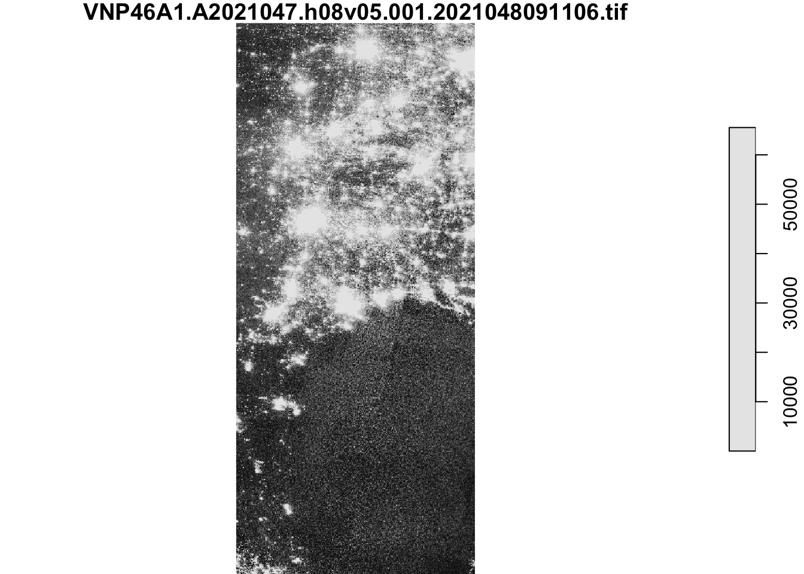
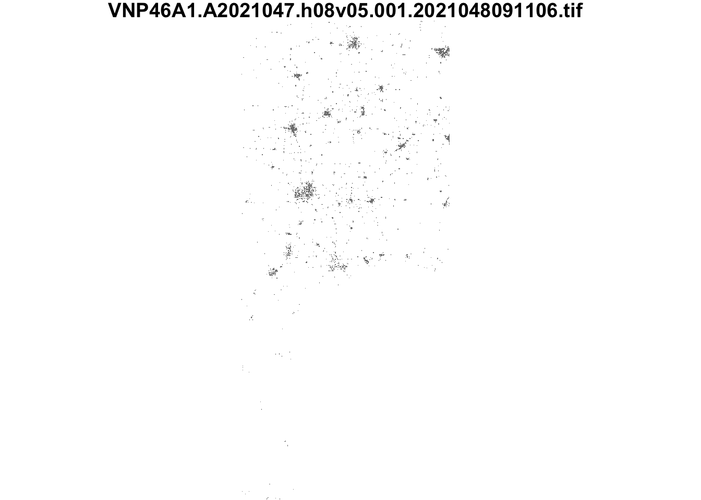
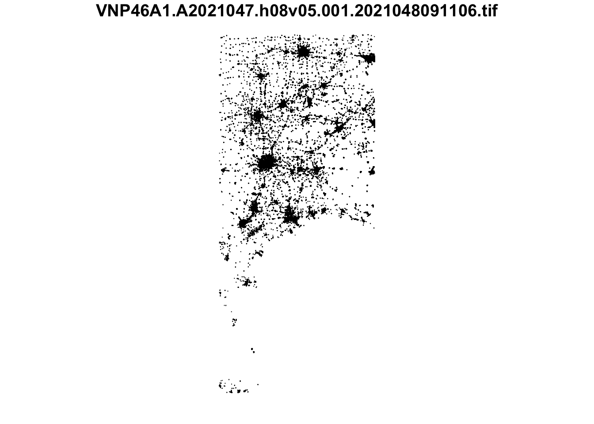
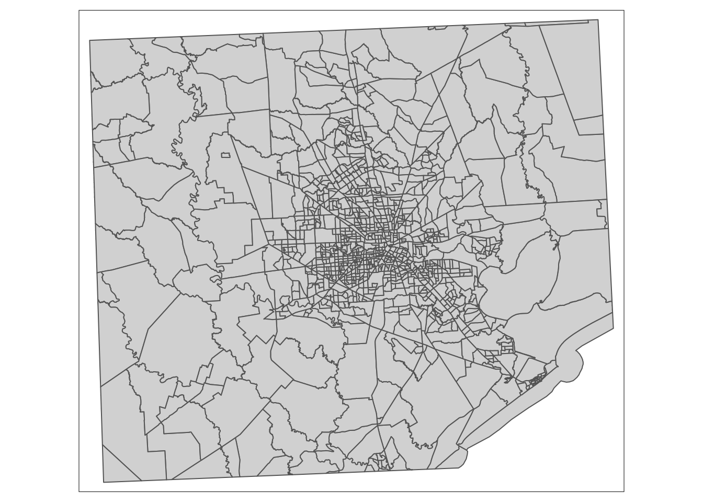
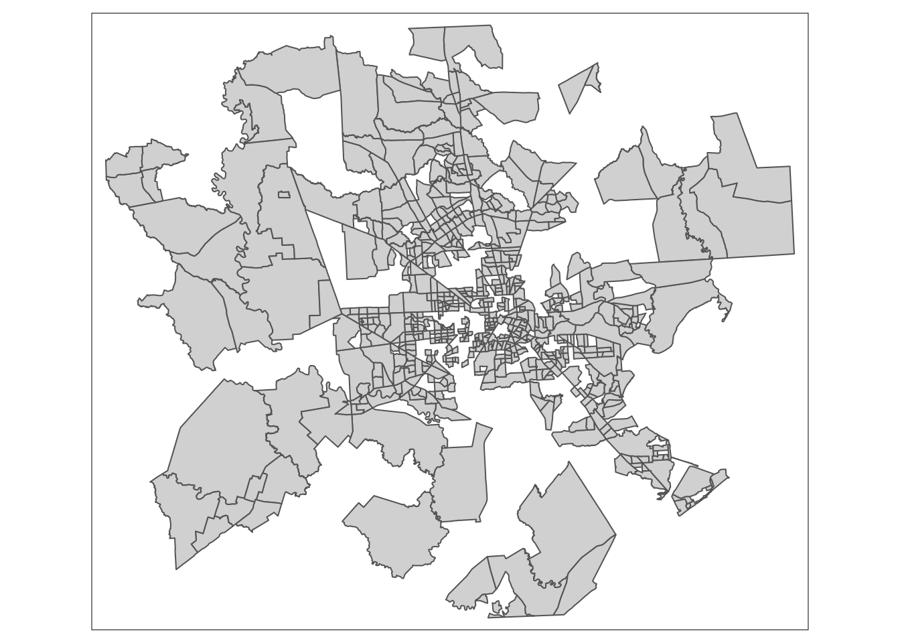
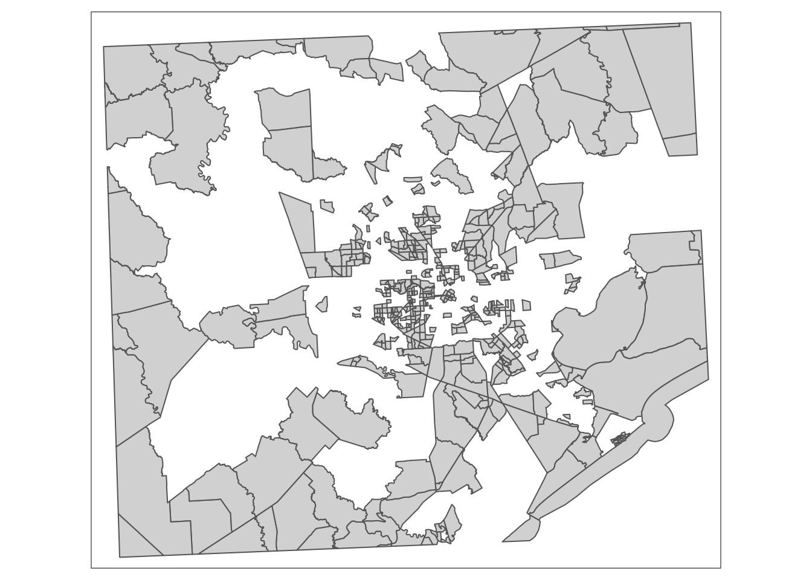
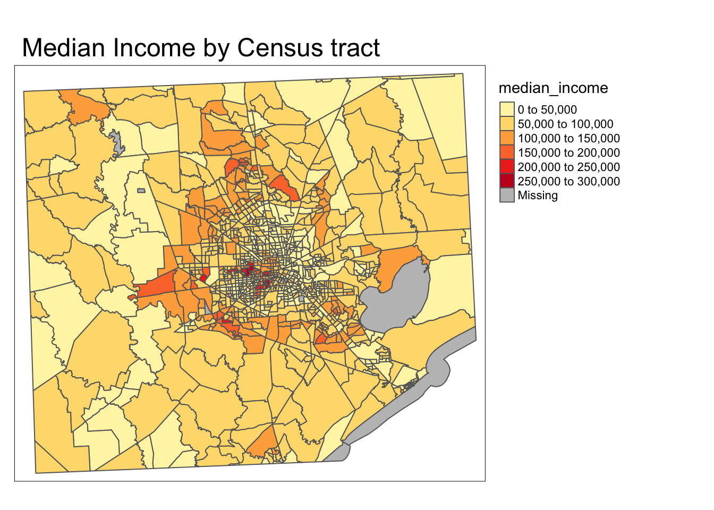
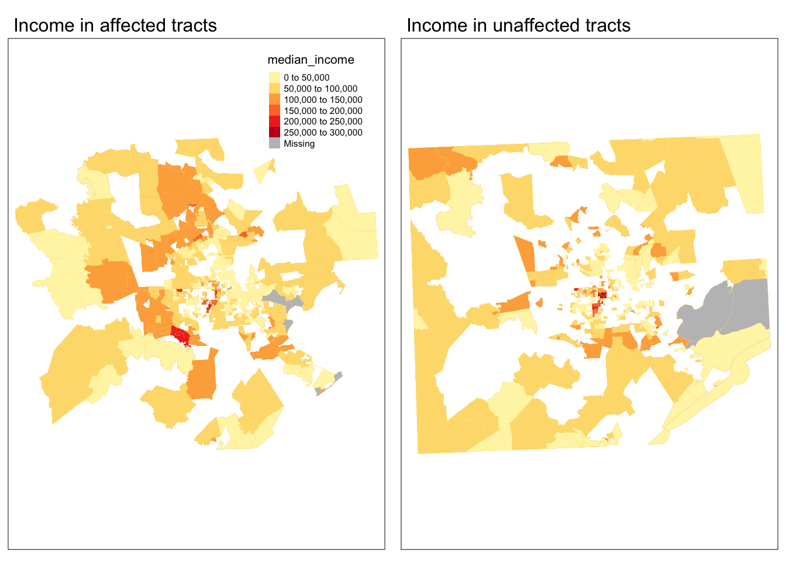
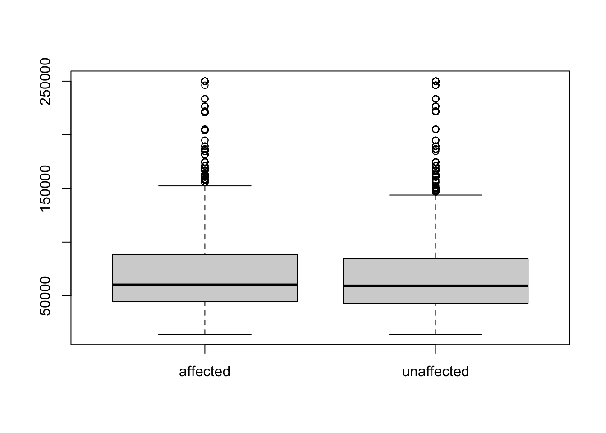

#--- Load in the raster files for the tiles you want
tile1_0207_path <- file.path("/Users/jaredpetry/Documents/MEDS/fall/eds223_geospatial/assignments/assignment3-jaredbpetry/data", "VNP46A1",
"VNP46A1.A2021038.h08v05.001.2021039064328.tif")
tile1_0207 <- read_stars(tile1_0207_path)
tile2_0207_path <- file.path("/Users/jaredpetry/Documents/MEDS/fall/eds223_geospatial/assignments/assignment3-jaredbpetry/data", "VNP46A1",
"VNP46A1.A2021038.h08v06.001.2021039064329.tif")
tile2_0207 <- read_stars(tile2_0207_path)
tile1_0216_path <- file.path("/Users/jaredpetry/Documents/MEDS/fall/eds223_geospatial/assignments/assignment3-jaredbpetry/data", "VNP46A1",
"VNP46A1.A2021047.h08v05.001.2021048091106.tif")
tile1_0216 <- read_stars(tile1_0216_path)
tile2_0216_path <- file.path("/Users/jaredpetry/Documents/MEDS/fall/eds223_geospatial/assignments/assignment3-jaredbpetry/data", "VNP46A1",
"VNP46A1.A2021047.h08v06.001.2021048091105.tif")
tile2_0216 <- read_stars(tile2_0216_path)
#--- Use st_mosaic() to combine tiles for each date
rast_0207 <- st_mosaic(tile1_0207, tile2_0207)
rast_0216 <- st_mosaic(tile1_0216, tile2_0216)Overview
“In February 2021, the state of Texas suffered a major power crisis, which came about as a result of three severe winter storms sweeping across the United States on February 10–11, 13–17, and 15–20.”1 For more background, check out these engineering and political perspectives.
For this assignment, we will:
- estimate the number of homes in Houston that lost power as a result of the first two storms
- investigate if socioeconomic factors are predictors of communities recovery from a power outage
The analysis will be based on remotely-sensed night lights data, acquired from the Visible Infrared Imaging Radiometer Suite (VIIRS) onboard the Suomi satellite. In particular, we will use the VNP46A1 to detect differences in night lights before and after the storm to identify areas that lost electric power.
To determine the number of homes that lost power, we link (spatially join) these areas with OpenStreetMap data on buildings and roads.
To investigate potential socioeconomic factors that influenced recovery, we will link our analysis with data from the US Census Bureau.
Learning objectives:
- load vector/raster data
- simple raster operations
- simple vector operations
- spatial joins
Data
Night lights
Use NASA’s Worldview to explore the data around the day of the storm. There are several days with too much cloud cover to be useful, but 2021-02-07 and 2021-02-16 provide two clear, contrasting images to visualize the extent of the power outage in Texas.
VIIRS data is distributed through NASA’s Level-1 and Atmospheric Archive & Distribution System Distributed Active Archive Center (LAADS DAAC). Many NASA Earth data products are distributed in 10x10 degree tiles in sinusoidal equal-area projection. Tiles are identified by their horizontal and vertical position in the grid. Houston lies on the border of tiles h08v05 and h08v06. We therefore need to download two tiles per date.
Roads
Typically highways account for a large portion of the night lights observable from space (see Google’s Earth at Night). To minimize falsely identifying areas with reduced traffic as areas without power, we will ignore areas near highways.
OpenStreetMap (OSM) is a collaborative project which creates publicly available geographic data of the world. Ingesting this data into a database where it can be subsetted and processed is a large undertaking. Fortunately, third party companies redistribute OSM data. We used Geofabrik’s download sites to retrieve a shapefile of all highways in Texas and prepared a Geopackage (.gpkg file) containing just the subset of roads that intersect the Houston metropolitan area.
Houses
We can also obtain building data from OpenStreetMap. We again downloaded from Geofabrick and prepared a GeoPackage containing only houses in the Houston metropolitan area.
Socioeconomic
We cannot readily get socioeconomic information for every home, so instead we obtained data from the U.S. Census Bureau’s American Community Survey for census tracts in 2019. The folder ACS_2019_5YR_TRACT_48.gdb is an ArcGIS “file geodatabase”, a multi-file proprietary format that’s roughly analogous to a GeoPackage file.
We use st_layers() to explore the contents of the geodatabase. Each layer contains a subset of the fields documents in the ACS metadata.
The geodatabase contains a layer holding the geometry information, separate from the layers holding the ACS attributes. You have to combine the geometry with the attributes to get a feature layer that sf can use.
Project
Load and visualize aerial raster files during the blackout and after:
#--- Visualize the rasters that we created
plot(rast_0207) downsample set to 6
plot(rast_0216)downsample set to 6
How to change a stars object into an sf object:
sfrast_0207 <- st_as_sf(rast_0207) #sf object in wgs84Create a Blackout Mask
- find the change in night lights intensity (presumably) caused by the storm
- reclassify the difference raster, assuming that any location that experienced a drop of more than 200 nW cm-2sr-1 experienced a blackout
- assign
NAto all locations that experienced a drop of less than 200 nW cm-2sr-1
#--- Get the difference in values for a new raster diff_rast
diff_rast <- rast_0216 - rast_0207 #stars object
diff_rast_over200 <- diff_rast > 200
diff_rast_over200[diff_rast_over200 == 0] = NA
plot(diff_rast_over200) #stars objectWarning in plot.stars(diff_rast_over200): breaks="quantile" leads to a single
class; maybe try breaks="equal" instead?downsample set to 6
Vectorize the Mask
- use
st_as_sf()to vectorize the blackout mask - fix any invalid geometries using
st_make_valid
#--- changing stars object to sf object
blackout_vect <- st_as_sf(diff_rast_over200) |>
st_make_valid()
plot(blackout_vect)
Crop the Vectorized Map to Our Region of Interest
- define the Houston metropolitan area with the following coordinates
- (-96.5, 29), (-96.5, 30.5), (-94.5, 30.5), (-94.5, 29)
- turn these coordinates into a polygon using
st_polygon - convert the polygon into a simple feature collection using
st_sfc()and assign a CRS- because we are using this polygon to crop the night lights data it needs the same CRS
- crop (spatially subset) the blackout mask to our region of interest
- re-project the cropped blackout dataset to EPSG:3083 (NAD83 / Texas Centric Albers Equal Area)
#--- create a list of points for your polygon...THE ORDER MATTERS..
#--- had to add the first point again at the end
#--- to avoid an error about it not being 'closed'
houston_list = list(rbind(c(-96.5, 29), c(-96.5, 30.5),
c(-94.5, 30.5), c(-94.5, 29),
c(-96.5, 29)))
#--- now form a polygon from those points
houston_polygon <- st_polygon(houston_list) # 'polygon'
#--- convert this to an sf object
houston_poly_sfc <- st_sfc(houston_polygon, crs = 4326) # 'sfc polygon'
houston_poly_sf <- st_as_sf(houston_poly_sfc) # 'sf object'
#--- make spatial subset of the blackout mask with the polygon
houston_subset <- st_crop(blackout_vect, houston_poly_sf) # in wgs84Warning: attribute variables are assumed to be spatially constant throughout all
geometries#--- convert this subset to EPSG 3083 projection
houston_blackout <- st_transform(houston_subset, "EPSG: 3083") # in NAD83Exclude Highways from Blackout Mask
The roads geopackage includes data on roads other than highways. However, we can avoid reading in data we don’t need by taking advantage of st_read’s ability to subset using a SQL query.
- define SQL query
- load just highway data from geopackage using
st_read - reproject data to EPSG:3083
- identify areas within 200m of all highways using
st_bufferst_bufferproduces undissolved buffers, usest_unionto dissolve them
- find areas that experienced blackouts that are further than 200m from a highway
query <- "SELECT * FROM gis_osm_roads_free_1 WHERE fclass='motorway'"
highways <- st_read("data/gis_osm_roads_free_1.gpkg", query = query)
#--- Define SQL query
query <- "SELECT * FROM gis_osm_roads_free_1 WHERE fclass='motorway'"
#--- Load highway data from geopackage
highways <- st_read("/Users/jaredpetry/Documents/MEDS/fall/eds223_geospatial/assignments/assignment3-jaredbpetry/data/gis_osm_roads_free_1.gpkg", query = query)Reading query `SELECT * FROM gis_osm_roads_free_1 WHERE fclass='motorway'' from data source `/Users/jaredpetry/Documents/MEDS/fall/eds223_geospatial/assignments/assignment3-jaredbpetry/data/gis_osm_roads_free_1.gpkg'
using driver `GPKG'
Simple feature collection with 6085 features and 10 fields
Geometry type: LINESTRING
Dimension: XY
Bounding box: xmin: -96.50429 ymin: 29.00174 xmax: -94.39619 ymax: 30.50886
Geodetic CRS: WGS 84#--- Set CRS
highways3083 <- st_transform(highways, "EPSG:3083")
highways3083_geom <- highways3083$geom
#--- Create buffer of 200m from highways (I believe that meters is default units for NAD83)**
#--- highway_buffer is now "sfc_MULTIPOYGON"
highway_buffer <- st_buffer(highways3083_geom, dist = 200) |> st_union()
#--- Now we can make our mask
houston_no_hwy <- houston_blackout[highway_buffer, op = st_disjoint]Find homes impacted by blackouts
load buildings data
- load buildings dataset using
st_readand the following SQL query to select only residential buildings - reproject data to EPSG:3083
homes_query <- "SELECT * FROM gis_osm_buildings_a_free_1 WHERE (type IS NULL AND name IS NULL) OR type in ('residential', 'apartments', 'house', 'static_caravan', 'detached')"
homes <- st_read("/Users/jaredpetry/Documents/MEDS/fall/eds223_geospatial/assignments/assignment3-jaredbpetry/data/gis_osm_buildings_a_free_1.gpkg", query = homes_query) |>
st_transform("EPSG:3083")Reading query `SELECT * FROM gis_osm_buildings_a_free_1 WHERE (type IS NULL AND name IS NULL) OR type in ('residential', 'apartments', 'house', 'static_caravan', 'detached')' from data source `/Users/jaredpetry/Documents/MEDS/fall/eds223_geospatial/assignments/assignment3-jaredbpetry/data/gis_osm_buildings_a_free_1.gpkg'
using driver `GPKG'
Simple feature collection with 475941 features and 5 fields
Geometry type: MULTIPOLYGON
Dimension: XY
Bounding box: xmin: -96.50055 ymin: 29.00344 xmax: -94.53285 ymax: 30.50393
Geodetic CRS: WGS 84find homes in blackout areas
- filter to homes within blackout areas
- count number of impacted homes
#--- filter for the homes that are within the blackout vector (I'm assuming we are using what I just made above for this)
blackout_homes <- homes[houston_no_hwy, "geom"]
#--- count the number of homes in this subset
print(nrow(blackout_homes)) #--- 71,233 homes affected[1] 71233Investigate socioeconomic factors
load ACS data
- use
st_read()to load the geodatabase layers - geometries are stored in the
ACS_2019_5YR_TRACT_48_TEXASlayer - income data is stored in the
X19_INCOMElayer - select the median income field
B19013e1 - hint: reproject data to EPSG:3083
#--- read geometries layer and change the column to match
tract <- st_read("/Users/jaredpetry/Documents/MEDS/fall/eds223_geospatial/assignments/assignment3-jaredbpetry/data/ACS_2019_5YR_TRACT_48_TEXAS.gdb",
layer = "ACS_2019_5YR_TRACT_48_TEXAS") |>
mutate(GEOID = GEOID_Data) Reading layer `ACS_2019_5YR_TRACT_48_TEXAS' from data source
`/Users/jaredpetry/Documents/MEDS/fall/eds223_geospatial/assignments/assignment3-jaredbpetry/data/ACS_2019_5YR_TRACT_48_TEXAS.gdb'
using driver `OpenFileGDB'
Simple feature collection with 5265 features and 15 fields
Geometry type: MULTIPOLYGON
Dimension: XY
Bounding box: xmin: -106.6456 ymin: 25.83716 xmax: -93.50804 ymax: 36.5007
Geodetic CRS: NAD83#--- read in the income layer and select columns GEOID and median income
median_income <- st_read("/Users/jaredpetry/Documents/MEDS/fall/eds223_geospatial/assignments/assignment3-jaredbpetry/data/ACS_2019_5YR_TRACT_48_TEXAS.gdb",
layer = "X19_INCOME",
geometry_column = "GEOID") |>
select("GEOID", "B19013e1") Reading layer `X19_INCOME' from data source
`/Users/jaredpetry/Documents/MEDS/fall/eds223_geospatial/assignments/assignment3-jaredbpetry/data/ACS_2019_5YR_TRACT_48_TEXAS.gdb'
using driver `OpenFileGDB'Warning: no simple feature geometries present: returning a data.frame or tbl_dfDetermine which census tracts experienced blackouts
- join the income data to the census tract geometries
- make sure to join by geometry ID
- spatially join census tract data with buildings determined to be impacted by blackouts
- find which census tracts had blackouts
#--- left join with the blackout info to get geometries
tract_w_income <- left_join(tract, median_income,
by = "GEOID") |>
st_transform(crs = "EPSG:3083") |>
rename(median_income = B19013e1)
#--- spatially join with buildings that experienced blackouts (blackout_homes)
black_tract_vector <- st_join(blackout_homes, tract_w_income,
join = st_within)
# plot(income_buildings$geometry)
# plot(blackout_homes)
#--- find which census tracts have homes that experienced blackouts
#--- to do this, find the unique rows by census tract from the object above
print(n_distinct(black_tract_vector$TRACTCE))[1] 629#--- this says that there are 629 unique tracts with homes that experienced blackouts
#--- Make sure this is right with a couple methods:
black_tract_unique <- unique(black_tract_vector$TRACTCE)
#--- also has 629 tracts with blackouts
# create a subset of tracts that had blackouts in them
blackout_tracts <- tract[tract$TRACTCE %in%
black_tract_unique,]
# create a subset of tracts with no blackouts
unaffected_tracts <- tract[!(tract$TRACTCE %in% black_tract_unique),]Compare incomes of impacted tracts to unimpacted tracts
- create a map of median income by census tract, designating which tracts had blackouts
#--- subset all the cencus tracts to houston only:
#--- follow the same steps as before: crop while in wgs84 and then transform to
#--- NAD83 after
houston_all_tracts <- tract_w_income |>
st_transform("EPSG:4326") |>
st_crop(houston_poly_sf) |>
st_transform("EPSG:3083") Warning: attribute variables are assumed to be spatially constant throughout all
geometries#--- also crop the blackout_tracts object
affected_tract_cropped <- blackout_tracts |>
st_transform("EPSG:4326") |>
st_crop(houston_poly_sf) |>
st_transform("EPSG:3083")Warning: attribute variables are assumed to be spatially constant throughout all
geometries#--- same thing for the unnafected tracts
unaffected_tracts_cropped <- unaffected_tracts |>
st_transform("EPSG:4326") |>
st_crop(houston_poly_sf) |>
st_transform("EPSG:3083")Warning: attribute variables are assumed to be spatially constant throughout all
geometries#--- Plot all tracts versum the blackout tracts to make sure we're on track:
#plot all the houston tracts
houston_all_tracts_map <- tm_shape(houston_all_tracts) +
tm_polygons()
houston_all_tracts_map
#--- Plot just blackout tracts
blackout_tracts_map <- tm_shape(affected_tract_cropped) +
tm_polygons()
blackout_tracts_map
#--- Make a plot to see how that went
unaffected_tracts_map <- tm_shape(unaffected_tracts_cropped) +
tm_polygons()
unaffected_tracts_map
Results
Make the Map
start with all the tracts and color based on income
#--- how are we gonna get the blackout status in the map?
#--- make a dataframe with just tract, geoid, and median income
#tract_geoid_income
#--- First let's try making a map of just income and census tract
median_income_map <- tm_shape(houston_all_tracts) +
tm_fill(col = "median_income", palette = "YlOrRd") +
tm_borders() +
tm_layout(legend.outside = T,
main.title = "Median Income by Census tract",
frame = T)
median_income_map
#--- Since there's a lot going on here, let's split into two maps to compare the blackout tracts vs. the anaffected tracts
#--- add income data to affected tracts
blackout_w_income <- st_join(affected_tract_cropped, tract_w_income)
#--- make map of blackout tracts
blackout_w_income_map <- tm_shape(blackout_w_income) +
tm_fill(col = "median_income", palette = "YlOrRd") +
tm_layout(legend.position = c("right", "top"),
legend.width = .3,
legend.height = .2,
main.title = "Income in affected tracts",
main.title.size = 1,
frame = T)
#--- add income data to unaffected tracts
unaffected_w_income <- st_join(unaffected_tracts_cropped, tract_w_income)
#--- make map of unaffected tracts
unaffected_w_income_map <- tm_shape(unaffected_w_income) +
tm_fill(col = "median_income", palette = "YlOrRd") +
tm_layout(legend.show = F,
main.title = "Income in unaffected tracts",
main.title.size = 1,
frame = T)
tmap_arrange(blackout_w_income_map, unaffected_w_income_map,
ncol = 2,
nrow = 1)
plot the distribution of income in impacted and unimpacted tracts
#--- make two boxplots next to eachother with income data of tracts to compare blackout vs. non-blackout tracts
boxplot(blackout_w_income$median_income, unaffected_w_income$median_income,
names = c("affected", "unaffected"))
Discussion:
Upon looking at the maps and boxplot I made above, there does not seem to be a very significant difference in the median income between the two groups: those affected by the blackout and those not affected. That really surprised me because I believe that the electrical infrastructure in lower income neighborhoods would have likely been older and more subject to failure while the grid was in a stressful state during this weather event. I would say that a limitation to this study is the fact that the two satellite images that we started with happened to be a bit far apart temporally. I would hypothesize that if we were able to obtain a photo right before the blackout happened, and then right when the blackout was at its most severe, we would have been able to see a larger difference, and possibly seen more significant results. Additionally, the data may have been slightly misleading for the income data because the areas farther from the city seemed to be much less affected, and likely contain very different demographics than those closer to the urban areas of Houston. I noticed that the more rural areas tended to have slightly lower median incomes. It would be interesting to focus on a smaller area, because these large tracts may have skewed our data a bit.
Footnotes
Wikipedia. 2021. “2021 Texas power crisis.” Last modified October 2, 2021. https://en.wikipedia.org/wiki/2021_Texas_power_crisis.↩︎